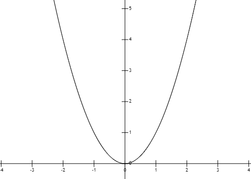
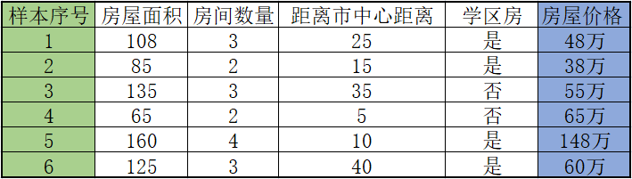
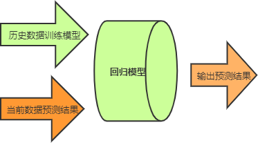

线性回归算法详解
本节我们会认识第一个机器学习算法 —— 线性回归算法（Linear Regression），它是机器学习算法中较为简单，且容易理解的算法模型，你可以把它看做您的第一个“Hello World”程序。
我们先从语义上了解“线性回归”，如果您是第一次接触“线性回归”这个词，那么可以把它分开来看，其中“性代”表线性模型，而“回归”则表示回归问题，也就是用线性模型来解决回归问题。看完上述解释，您脑子中可能仍有许多“问号”，线性还可以理解，比如我们所熟知的直线、曲线、线性方程等，那么“回归”又代表什么呢？
其实“回归”一词最早由英国科学家弗朗西斯·高尔顿提出。1875 年，高尔顿利用子代豌豆与父代豌来确定豌豆尺寸的遗传规律。实验的大意是说：非常矮小的的父辈倾向于有偏高的子代，非常高大的的父辈倾向于有偏矮的子代。。这表明子代的身高向着父辈身高的平均值回退，后来人们把这种研究方法称为“回归预测”。

图1：线性连续函数
我们知道“线性回归”就是利用线性模型来解决“回归问题”，那到底什么是回归问题呢？你可以把它理解为“预测”真实值的过程。
在《三国演义》中有一个非常精彩的片段“七星坛诸葛祭风”说的是诸葛亮借东风的故事。其实我们抛开历史，单从科学角度出发，诸葛亮借东风就是一个“回归问题”。首先诸葛亮需要掌握大量的天文地理知识，并凭借自己的知识对以往的天气数据进行大量研究，最后才能预测某个时间将有“东风来临”。这种相似的回归问题，在实际生活中我们经常遇到，比如根据历史行情预测股票走势、预测房屋售价以及电影票房预估等等，而要实现这些预测就需要大量的“历史数据”作为支撑点。
在上述讲解过程中，我们反复提起“预测”与“历史数据”，既然是预测，那么就不能说它是 100 % 精确，所以线性回归只是无限地逼近“真实值”，而这个逼近的过程需要大量“历史数据”提供支持。因此线性回归就是利用线性模型来“预测”真实值的过程。
根据上表中的规律预测出 9 所对应的输出值，并写出线性方程。这个示例是不是非常简单，我们很容易想到 9 对应的是“18”，这是一道小学生都能解出来题，但请您不要小看这么一个简单的示例，它同样说明了很多问题。线性方程如下所示：
现在要判断一个西瓜是否是成熟，根据我们的日常经验可从以下几个特征来判断：外表色泽(x)、根蒂(y)、敲声(z)。而以上三个特征所占用的权值参数也不同。如下所示：
当然采集数据的时也会存在一些无用数据，比如西瓜的外形、价格，这些特征不会对预测结果产生影响，因此它们权值参数为“0”。从这个例子可以得出“权值参数”是决定预测结果是否准确的关键因素。
当然上述样本数量远远不足，如果想要更加准确的预测就要收集更多的数据，至少保证 100 条样本。表格中的最后一栏是“房屋售价”，这是“有监督学习”的典型特点，被称为“标签”也就是我们所说的“参考答案”。表格中的面积、数量、距离市中心距离（km），以及是否是学区房，这些都是影响最终预测结果的相关因素，我们称之为“特征”，也叫“属性”。
构建完模型，我们需要对其进行训练，训练的过程就是将表格中的数据以矩阵的形式输入到模型中，模型则通过数学统计方法计算房屋价格与各个特征之间关联关系，也就是“权值参数”。训练完成之后，您就可以对自己的房屋价格进行预测了。首先将数据按照“特征值”依次填好，并输入到模型中，最后模型会输出一个合理的预测结果。示意图如下所示：
从上图可知，回归模型承担着非常重要的作用，关于如何构建回归模型，在下一节将做详细介绍。
我们先从语义上了解“线性回归”，如果您是第一次接触“线性回归”这个词，那么可以把它分开来看，其中“性代”表线性模型，而“回归”则表示回归问题，也就是用线性模型来解决回归问题。看完上述解释，您脑子中可能仍有许多“问号”，线性还可以理解，比如我们所熟知的直线、曲线、线性方程等，那么“回归”又代表什么呢？
其实“回归”一词最早由英国科学家弗朗西斯·高尔顿提出。1875 年，高尔顿利用子代豌豆与父代豌来确定豌豆尺寸的遗传规律。实验的大意是说：非常矮小的的父辈倾向于有偏高的子代，非常高大的的父辈倾向于有偏矮的子代。。这表明子代的身高向着父辈身高的平均值回退，后来人们把这种研究方法称为“回归预测”。
线性回归是什么
线性回归主要用来解决回归问题，也就是预测连续值的问题。而能满足这样要求的数学模型被称为“回归模型”。最简单的线性回归模型是我们所熟知的一次函数（即 y=kx+b），这种线性函数描述了两个变量之间的关系，其函数图像是一条连续的直线。如下图蓝色直线：图1：线性连续函数
还有另外一种回归模型，也就是非线性模型(nonlinear model)，它指因变量与自变量之间的关系不能表示为线性对应关系(即不是一条直线)，比如我们所熟知的对数函数、指数函数、二次函数等。

图2：非线性连续函数
图2：非线性连续函数
我们知道“线性回归”就是利用线性模型来解决“回归问题”，那到底什么是回归问题呢？你可以把它理解为“预测”真实值的过程。
在《三国演义》中有一个非常精彩的片段“七星坛诸葛祭风”说的是诸葛亮借东风的故事。其实我们抛开历史，单从科学角度出发，诸葛亮借东风就是一个“回归问题”。首先诸葛亮需要掌握大量的天文地理知识，并凭借自己的知识对以往的天气数据进行大量研究，最后才能预测某个时间将有“东风来临”。这种相似的回归问题，在实际生活中我们经常遇到，比如根据历史行情预测股票走势、预测房屋售价以及电影票房预估等等，而要实现这些预测就需要大量的“历史数据”作为支撑点。
在上述讲解过程中，我们反复提起“预测”与“历史数据”，既然是预测，那么就不能说它是 100 % 精确，所以线性回归只是无限地逼近“真实值”，而这个逼近的过程需要大量“历史数据”提供支持。因此线性回归就是利用线性模型来“预测”真实值的过程。
线性回归方程
那么线性回归是如何实现预测的呢？其实主要是通过“线性方程”，或叫“回归方程”来实现。下面列举一个简单的例子，现有以下一组数据：| 输入 | 输出 |
|---|---|
| 1 | 2 |
| 2 | 4 |
| 3 | 6 |
| ... | ... |
| 9 | ? |
根据上表中的规律预测出 9 所对应的输出值，并写出线性方程。这个示例是不是非常简单，我们很容易想到 9 对应的是“18”，这是一道小学生都能解出来题，但请您不要小看这么一个简单的示例，它同样说明了很多问题。线性方程如下所示：
Y=2*X在上述线程方程中
2代表权值参数，而求这个参数的过程就是“回归”，一旦有了这个参数，再给定输入，做预测就非常容易了。具体的做法就是用回归系数乘以输入值，这样就得到了预测值。上述示例的预测函数（或称假设函数）可记为：
y = w1x + b
在前面介绍专业术语时，我们提起过“假设函数”，上述函数就是线性模型的“假设函数”。其中 x 表示输入的样本数据，y 表示输出的预测结果，而 w1 指的是线性回归模型的权值参数，b 指的是线性回归模型的“偏差值”。解决线性回归问题的关键就在于求出权值参数、偏差值。权值，可理解为个不同“特征”对于预测结果的重要性。权值系数越大，那么这一项属性值对最终结果的影响就越大。
在实际应有中，线性回归模型要更复杂一些，比如要分析实际特征值对结果影响程度的大小，从而调整相应特征值的回归系数。下面举一个简单的应用示例：现在要判断一个西瓜是否是成熟，根据我们的日常经验可从以下几个特征来判断：外表色泽(x)、根蒂(y)、敲声(z)。而以上三个特征所占用的权值参数也不同。如下所示：
y = 0.2x1 + 0.5x2 + 0.3 x3 + 1
上述表达式可以看出每一个特征值对预测结果的影响程度不同，根蒂是否“枯萎”对结果影响最大，而外表色泽是否鲜亮，敲声是否沉闷则占据次要因素。当然采集数据的时也会存在一些无用数据，比如西瓜的外形、价格，这些特征不会对预测结果产生影响，因此它们权值参数为“0”。从这个例子可以得出“权值参数”是决定预测结果是否准确的关键因素。
实现预测的流程
下面通过一个具体实例讲解线性回归预测的具体流程。1) 数据采集
任何模型的训练都离不开数据，因此收集数据构建数据集是必不可少的环节。比如现在要预测一套房子的售价，那么你必须先要收集周围房屋的售价，这样才能确保你预测的价格不会过高，或过低。如下表所示：

图3：数据集样本
图3：数据集样本
当然上述样本数量远远不足，如果想要更加准确的预测就要收集更多的数据，至少保证 100 条样本。表格中的最后一栏是“房屋售价”，这是“有监督学习”的典型特点，被称为“标签”也就是我们所说的“参考答案”。表格中的面积、数量、距离市中心距离（km），以及是否是学区房，这些都是影响最终预测结果的相关因素，我们称之为“特征”，也叫“属性”。
你可能会认为影响房屋售价的不止这些因素，没错，不过采集数据是一个很繁琐的过程，因此一般情况下，我们只选择与预测结果密切相关的重要“特征”。
2) 构建线性回归模型
有了数据以后，下一步要做的就是构建线性回归模型，这也是最为重要的一步，这个过程会涉及到一些数学知识，至于如何构建模型，下一节会做详细介绍。构建完模型，我们需要对其进行训练，训练的过程就是将表格中的数据以矩阵的形式输入到模型中，模型则通过数学统计方法计算房屋价格与各个特征之间关联关系，也就是“权值参数”。训练完成之后，您就可以对自己的房屋价格进行预测了。首先将数据按照“特征值”依次填好，并输入到模型中，最后模型会输出一个合理的预测结果。示意图如下所示：

图4：流程示意图
图4：流程示意图
从上图可知，回归模型承担着非常重要的作用，关于如何构建回归模型，在下一节将做详细介绍。
关注公众号「站长严长生」，在手机上阅读所有教程，随时随地都能学习。内含一款搜索神器，免费下载全网书籍和视频。

微信扫码关注公众号